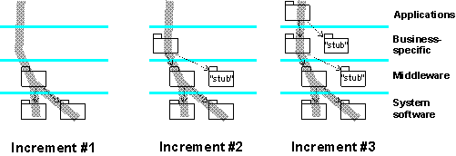

| Guideline: Continuous Integration |
 |
|
| Related Elements |
|---|
[ Don't forget to talk about running developer tests. ] [Content below taken from step “Accept Integrated Elements and Promote Build" in the Task “Integrate and Create Build"... this Main Description needs to be cleaned up ] Depending on the complexity and number of components to be integrated, it is often more efficient to produce the target build in a number of steps, adding more components with each step, and producing a series of intermediate 'mini' builds - thus, each build planned for an iteration may, in turn, have its own sequence of transient intermediate builds. These are subjected to a minimal integration test to ensure that what is added is compatible with what already exists in the system integration workspace. It should be easier to isolate and diagnose problems using this approach. Delivered components are accepted incrementally into the system integration workspace, having any merge conflicts being resolved. It is recommended that this is done in a bottom-up approach with respect to the layered structure, making sure that the versions of the components are consistent, taking imports into consideration. The increment of components is compiled and linked into an intermediate build, which is then provided to the tester to execute a minimal system integration test.  This diagram shows a build produced in three increments. Some components are only needed as stubs, to make it possible to compile and link the other components, and provide the essential minimal run-time behavior. |
| Concepts |
|---|
This program and the accompanying materials are made available under the View copyright information here: OpenUP Copyright |